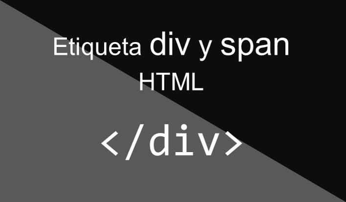
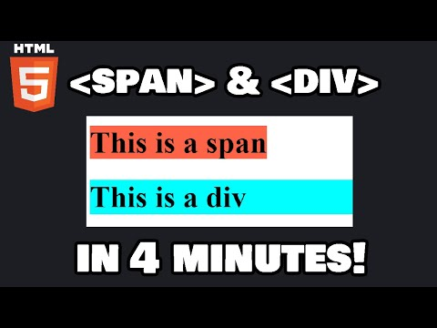

Uso de contenedores en HTML
En HTML los contenedores se utilizan para organizar y agrupar contenido dentro de una página web. El elemento más utilizado para esto es el <div>, el cual permite estructurar el contenido y aplicar estilos mediante CSS.
Los contenedores permiten crear diseños más organizados y facilitan el control del diseño de una página web. Gracias a ellos se pueden dividir diferentes partes del contenido como menús, artículos, imágenes o secciones completas del sitio.

